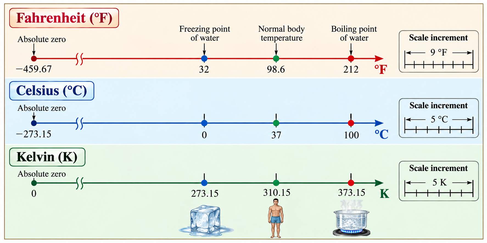
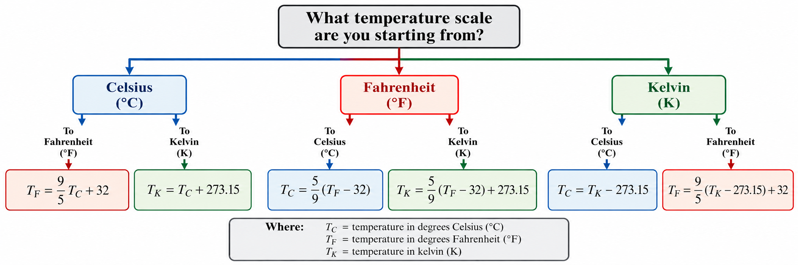
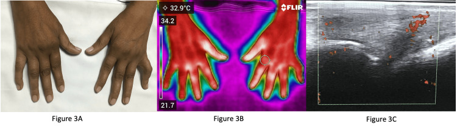
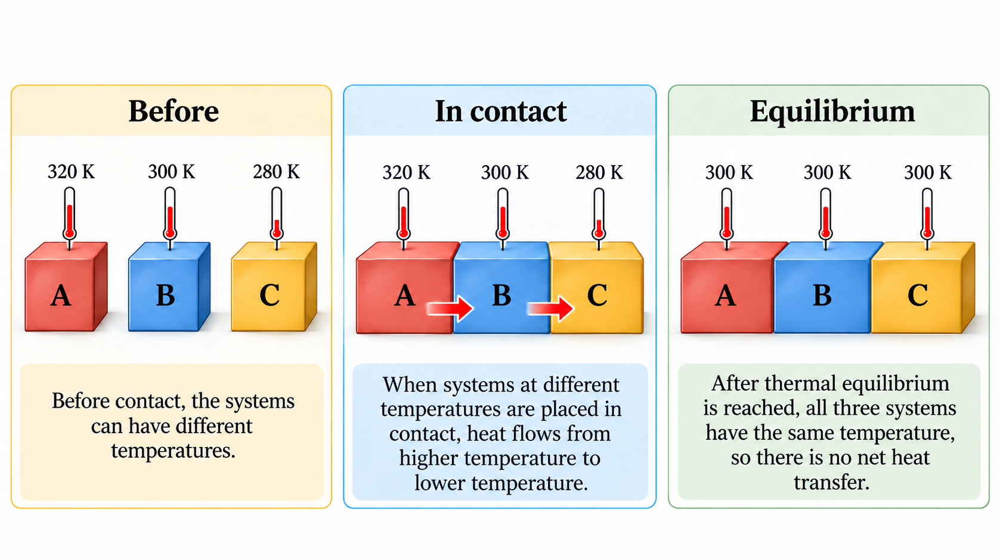
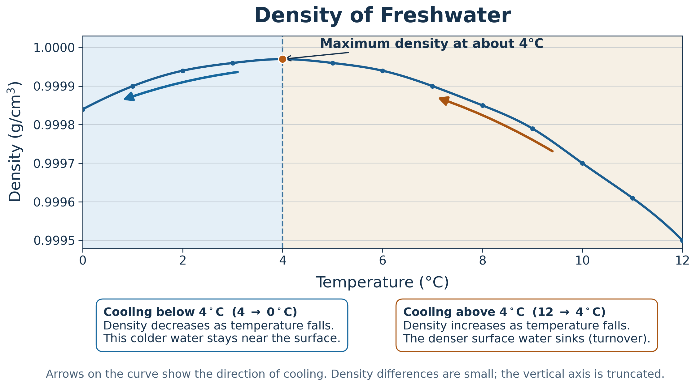
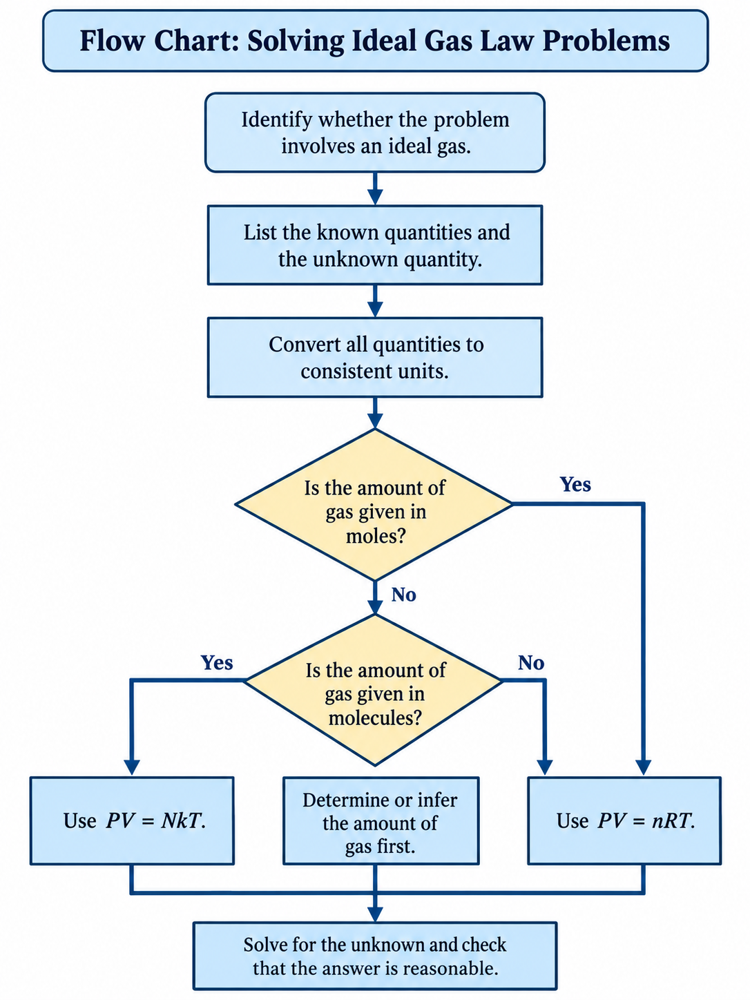
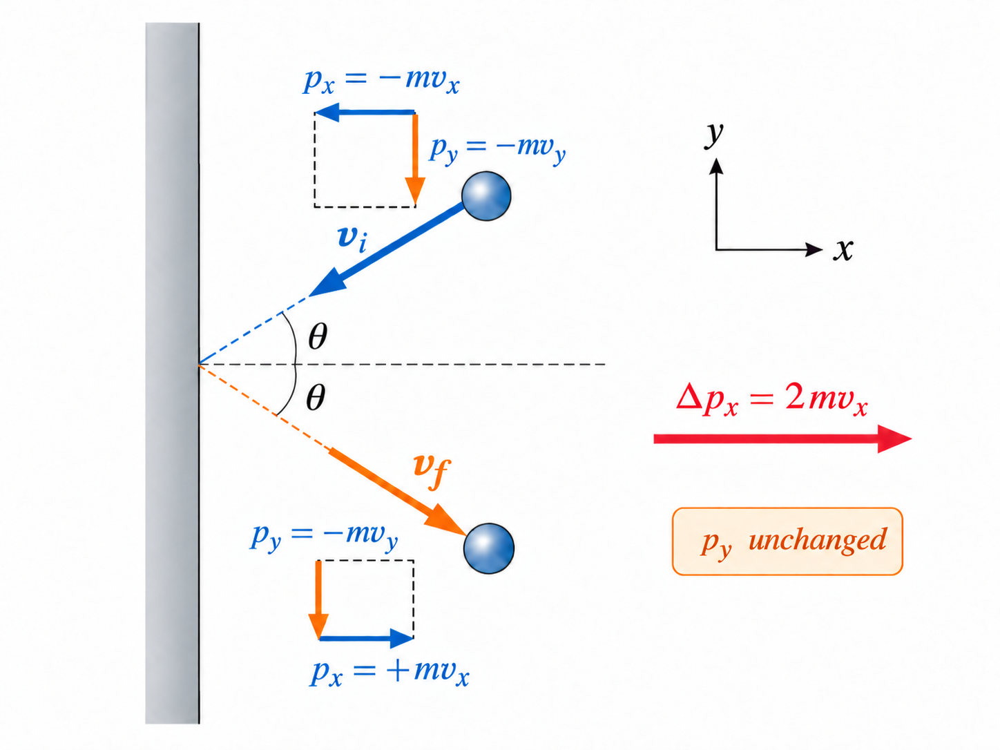
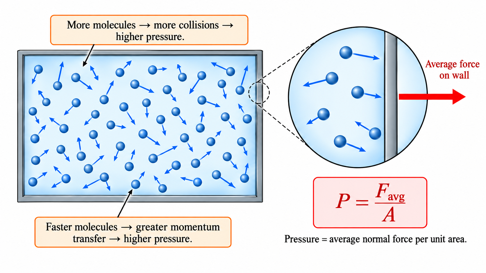
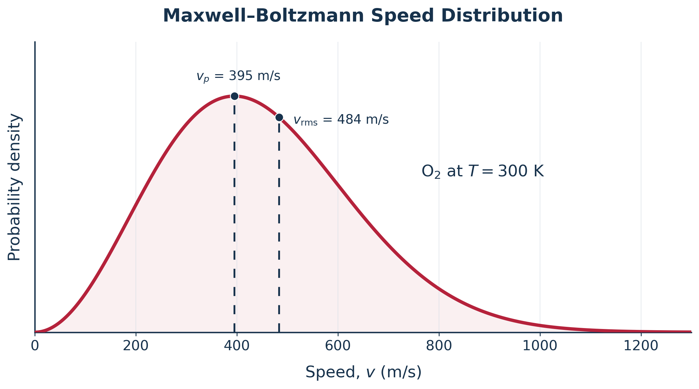
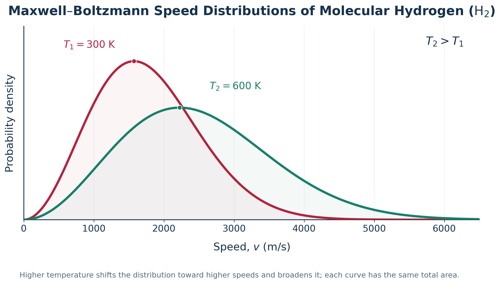

12. Kinetic Theory of Gases#
Oct 11, 2026 | 4414 words | 29 min read
12.1. Temperature#
Human perception of temperature has evolved from the relative sensation of what feels hot or cold. For example,
place one hand in hot water and the other in cold water;
then place both hands in tepid (warm) water.
The tepid water will feel cool to the hand that was in hot water, and warm to the one that was in cold water. The scientific definition of temperature is less ambiguous than your senses of hot and cold.
Temperature is operationally defined as what we measure with a thermometer. However, we will ultimately define the temperature in terms of the kinetic energies of atoms and molecules.
Many physical properties depend on temperature. For example, volume increases with temperature for most substances. This property is the basis for the common alcohol thermometer, the old mercury thermometer, and the bimetallic strip (used in modern thermostat). Other properties used to measure temperature include electrical resistance and color, as well as the emission of infrared (IR) radiation.
12.1.1. Temperature Scales#
Thermometers are used to measure temperature according to well-defined scales that use pre-defined reference points to compare quantities. The three most common temperature scales are the Fahrenheit, Celsius, and Kelvin scales. A temperature scale can be created by identifying two easily reproducible temperatures. The freezing and boiling temperatures of water at standard atmospheric pressure are commonly used.
The Celsius scale has the freezing point of water at \(0^\circ{\rm C}\) and the boiling point at \(100^\circ{\rm C}\). Its unit is the degree Celsius \(^\circ{\rm C}\).
On the Fahrenheit scale, the freezing point of water is \(32^\circ{\rm F}\) and the boiling point is at \(212^\circ{\rm F}\), where its unit is the degree Fahrenheit \(^\circ{\rm F}\).
Note that a temperature difference of 1 degree in Celsius is greater than 1 degree difference in Fahrenheit.
One degree on the Celsius scale is \(9/5 = 1.8\) times larger than one degree on the Fahrenheit scale.
The Kelvin scale is most commonly used in science. It is an absolute temperature scale define to have \(0\ {\rm K}\) at the lowest possible temperature (i.e., absolute zero). The kelvin (\(\rm K\)) is the unit on this scale and the adopted SI unit for temperature. The freezing and boiling points on this scale are \(273.15\ {\rm K}\) and \(373.15\ {\rm K}\), respectively. The temperature difference of one degree in Celsius and Kelvin scales are the same.

Fig. 12.1 The Fahrenheit, Celsius, and Kelvin temperature scales use different numerical values for the same physical temperatures. The freezing point of water, normal human body temperature, and boiling point of water are aligned to emphasize the correspondence among the three scales. Adapted from: OpenStax, College Physics 2e, Figure 13.7.#

Fig. 12.2 To convert a temperature, begin with the known temperature scale and follow the branch to the desired scale. Each branch gives the corresponding conversion equation, where \(T_{\rm C}\), \(T_{\rm F}\), and \(T_{\rm K}\) represent temperatures in degrees Celsius, degrees Fahrenheit, and kelvin, respectively. Adapted from: OpenStax, College Physics 2e, Table 13.1.#
12.1.2. Temperature Ranges in the Universe#
Humans have been known to survive with body temperatures within a small range, from \(24^\circ{\rm C}\) to \(44^\circ{\rm C}\) (\(75^\circ{\rm F}\) to \(111^\circ{\rm F}\)). The average normal body temperature is usually at \(37^\circ{\rm C}\) (or \(98.6^\circ{\rm F}\)). Variations in the average temperature can indicate a medical condition, e.g., a fever, an infection, a tumor, or circulatory problem.

Fig. 12.3 Infrared thermography reveals differences in skin temperature associated with rheumatoid arthritis. (a) A clinical photograph shows the patient’s hands. (b) Infrared imaging identifies elevated temperatures around several finger joints, where inflammation increases local blood flow and heat transfer. (c) Power Doppler ultrasonography provides additional evidence of active joint inflammation (synovitis). These images illustrate how measurements of infrared radiation can help identify regions of inflammation without direct contact. Adapted from: Chandra et al. (2026), Figure 3, licensed under CC BY 4.0.#
The lowest temperatures ever recorded are during lab experiments:
The coldest temperature was \(4.5 \times 10^{-10}\ {\rm K}\), or \(0.45\ {\rm nK}\) (at MIT), and \(1.0\times 10^{-10}\ {\rm K}\), or \(0.1\ {\rm nK}\) (at Helsinki University of Technology in Finland).
In contrast, the coldest recorded place on Earth’s surface is Vostok, Antarctica at \(183\ {\rm K}\) (\(-896\circ{\rm C}\)), and the coldest place (outside the lab) known in the universe is the Boomerang Nebula with a temperature of \(1\ {\rm K}\).
![Horizontal logarithmic temperature scale showing representative temperatures in the universe from about 10^-10 kelvin to 10^12 kelvin. The figure includes examples such as the lowest temperature achieved, the Boomerang Nebula, the cosmic microwave background, liquid helium, liquid nitrogen, Vostok Antarctica, water freezing, water boiling, fireplace fire, the Sun's surface, a white dwarf surface, the solar corona, the solar interior, rapid hydrogen fusion, the interior of a neutron star, and experiments at the Large Hadron Collider.](../_images/temperatures_in_the_universe_a_cosmic_scale.png)
Fig. 12.4 Representative temperatures in the universe span many orders of magnitude, from ultracold laboratory systems near \(10^{-10}\ {\rm K}\) to the extreme conditions produced in high-energy particle collisions near \(10^{12}\ {\rm K}\). This horizontal logarithmic scale highlights familiar cryogenic, everyday, astrophysical, and high-energy examples, with selected illustrations to help visualize the wide range of temperatures. Adapted from: OpenStax, College Physics 2e, Section 13.1 Temperature.#
12.1.3. Thermal Equilibrium and the Zeroth Law of Thermodynamics#
Thermometers actually take their own temperature, not the temperature they are measuring. Thermal contact is the heat transfer that occurs between two objects.
After some time \(t\), both objects will have exactly the same temperature. Then the objects are in thermal equilibrium and no further heat flow (or changes in temperature) will occur.
Given enough time, the thermometer registers a temperature of both the thermometer and the system with which it is in thermal equilibrium.
A single object is in internal thermal equilibrium when no heat is flowing within the object and therefore its temperature is uniform.
Zeroth Law of Thermodynamics
If two systems, \(A\) and \(B\), are in thermal equilibrium, they have the same temperature. If a third system, \(C\), is also in thermal equilibrium with \(B\), then \(A\) and \(C\) must be in thermal equilibrium with each other. All three systems have the same temperature.

Fig. 12.5 When systems at different temperatures are brought into thermal contact, heat flows from higher temperature to lower temperature until thermal equilibrium is reached. Once equilibrium is established, all three systems have the same temperature, so there is no net heat transfer between them.#
The zeroth law of thermodynamics was postulated in the 1930s, after the first and second laws of thermodynamics were already developed. Suppose a cold metal block and a hot metal block are both placed on a metal plate at room temperature. Eventually the cold block and plate will be in thermal equilibrium.
By the zeroth law, we can conclude that the cold block and hot block are also in thermal equilibrium. Two thermometers placed in thermal contact (one with each block) will also be in thermal equilibrium and therefore read the same temperature.
12.2. Thermal Expansion of Solids and Liquids#
The expansion of alcohol in thermometers is an example of thermal expansion, which is the change in size of volume of a given mass with temperature. Hot air rises because air expands when its temperature increases, which causes the hot air’s density to be smaller than the density of the surrounding air.
The buoyant (upward) force on a given mass of air increases when the air is heated.
This results in a net upward force on that air mass.
The same happens in all liquids and gases, driving natural heat transfer upwards in homes, oceans, and weather systems. Solids also undergo thermal expansion. Railroad tracks and bridges have expansion joints to allow them to freely expand and contract with temperature changes.
What are the basic properties of thermal expansion?
Thermal expansion is clearly related to temperature change. The greater the temperature change, the more a bimetallic strip will bend.
It depends on the material. In a thermometer, the expansion of alcohol is much grater than the expansion of the glass containing it.
What is the underlying cause of thermal expansion?
An increase in temperature implies an increase in kinetic energy of the individual atoms. In a solid, the atoms or molecules are closely packed together, but their kinetic energy (through rapid vibrations) pushes neighboring atoms (or molecules) apart from each other. This pushing of neighboring atoms results in a slightly greater distance (on average) between neighbors, and adds up to a large size for the whole object. Under ordinary conditions for most substances, there is no preferred direction and an increase in temperature will increase the soli’s size by certain fraction in each dimension.
Linear Thermal Expansion in 1D
The change in length \(\Delta L\) is proportional to length \(L\). The dependence of thermal expansion \(\Delta L\) on temperature change \(\Delta T\) (in Kelvin), substance, and length \(L\) is summarized by
where \(\alpha\) (in \(1/{\rm K}\)) is the coefficient of linear expansion. The coefficient \(\alpha\) varies slightly with temperature.
Table 12.1 lists representative values of the coefficient of linear expansion \(\alpha\). The equation \(\Delta L = \alpha L\Delta T\) is accurate for small changes in temperature and can be used for large changes in temperature if an average value of \(\alpha\) is used.
Material |
Linear expansion, \(\alpha\) (\(\times 10^{-6}\ {\rm K}^{-1}\)) |
Volume expansion, \(\beta\) (\(\times 10^{-6}\ {\rm K}^{-1}\)) |
|---|---|---|
Solids |
||
Aluminum |
25 |
75 |
Brass |
19 |
56 |
Copper |
17 |
51 |
Gold |
14 |
42 |
Iron or steel |
12 |
35 |
Invar (nickel-iron alloy) |
0.9 |
2.7 |
Lead |
29 |
87 |
Silver |
18 |
54 |
Glass (ordinary) |
9 |
27 |
Glass (Pyrex) |
3 |
9 |
Quartz |
0.4 |
1 |
Concrete or brick (approximate) |
12 |
36 |
Marble (average) |
7 |
21 |
Liquids |
||
Ether |
— |
1650 |
Ethyl alcohol |
— |
1100 |
Gasoline (petrol) |
— |
950 |
Glycerin |
— |
500 |
Mercury |
— |
180 |
Water |
— |
210 |
Gases (at constant pressure) |
||
Air |
— |
3400 |
Nitrogen (\({\rm N_2}\)) |
— |
3400 |
Oxygen (\({\rm O_2}\)) |
— |
3400 |
Helium (\({\rm He}\)) |
— |
3400 |
Hydrogen (\({\rm H_2}\)) |
— |
3400 |
Argon (\({\rm Ar}\)) |
— |
3400 |
Carbon dioxide (\({\rm CO_2}\)) |
— |
3400 |
Methane (\({\rm CH_4}\)) |
— |
3400 |
Note: The gas coefficients are approximate values based on ideal-gas behavior at \(20^\circ{\rm C}\) and constant pressure. Real gases exhibit small differences depending on their composition, temperature, and pressure. For most gases near atmospheric pressure, \(\beta\approx 1/T\) provides a good approximation.
Adapted from: OpenStax, College Physics 2e, Table 13.2.
12.2.1. Thermal Expansion in 2D and 3D#
Objects expand in all dimensions, where their lengths, areas, and volumes all increase with temperature. Holes get larger with a larger temperature. If you cut a hole in a metal plate, the remaining material will expand exactly as it would if the plug (i.e., piece of metal that is cut out) was still in place. The plug would get bigger and so the hole must get bigger too.
Fig. 12.6 Thermal expansion of brass in two and three dimensions. As the temperature increases, (a) a solid plate and circular disk expand, (b) the hole in a plate becomes larger rather than smaller, and (c) a cube expands in all three dimensions, increasing its volume. The dashed outlines indicate the original dimensions before heating. The expansion is magnified by a factor of 100 to make the small changes visible. Adapted from: OpenStax, College Physics 2e, Figure 13.12.#
Thermal Expansion in 2D and 3D
For small temperature changes, the change in area \(\Delta A\) is given by
which depends on the change in temperature \(\Delta T\) (in Kelvin), and \(\alpha\) (in \(1/{\rm K}\)) is the coefficient of linear expansion.
The change in volume \(\Delta V\) is very nearly \(\Delta V = 3\alpha V\Delta T\), but the formal equation is usually written as
where \(\beta\) is the coefficient of volume expansion (in \(1/{\rm K}\)) and \(\beta \approx 3\alpha\).
In general, objects will expand with increasing temperature. Water is the most important exception to this rule. Water expands with increasing temperature (its density decreases) when it is between \(+4^\circ{\rm C}\) and \(0^\circ{\rm C}\). Water is densest at \(+4^\circ{\rm C}\).
Fig. 12.7 Seasonal cooling and freezing of a freshwater pond illustrate the unusual thermal expansion of water. As surface water cools toward \(4^\circ{\rm C}\), its density increases, causing it to sink and circulate with warmer water below. This turnover continues until the pond approaches a uniform temperature of \(4^\circ{\rm C}\), where water reaches its maximum density. Further cooling below \(4^\circ{\rm C}\) decreases the density of the surface water, allowing it to remain above the warmer, denser water. Eventually, ice forms at the surface and provides an insulating layer, allowing liquid water near \(4^\circ{\rm C}\) to remain at the bottom, where aquatic life can survive during winter. Based on: OpenStax, College Physics 2e, Section 13.2, Thermal Expansion of Solids and Liquids.#
The most striking effect is the freezing of water in a pond. When water near the surface cools to \(4^\circ{\rm C}\), it is denser than the remaining water and thus will sink to the bottom. This “turnover” results in a layer of warmer water near the surface, which is then cooled. Eventually, the pond has a uniform temperature of \(4^\circ{\rm C}\).
If the temperature fo the surface layer drops below \(4^\circ{\rm C}\), the water is less dense than the water below, and thus stays near the top. As a result, the pond surface can completely freeze over. The ice on top of liquid water provides an insulating layer form winter’s harsh exterior air temperatures. Fish and other aquatic life can survive in \(4^\circ{\rm C}\) beneath ice, due to this unusual characteristic of water. It also produces circulation of water in the pond that necessary for a healthy ecosystem for the body of water.

Fig. 12.8 The density of freshwater reaches a maximum near \(4^\circ{\rm C}\). As water cools toward this temperature, its density increases, causing cooler surface water to sink and circulate with warmer water below. However, further cooling below \(4^\circ{\rm C}\) decreases its density, allowing colder water to remain near the surface. This unusual behavior explains why ponds freeze from the top while deeper water can remain liquid near \(4^\circ{\rm C}\). The vertical axis is truncated to emphasize the small changes in density. Adapted from: OpenStax, College Physics 2e, Figure 13.13.#
12.2.2. Thermal Stress#
Thermal stress is created by thermal expansion or contraction. This can be destructive, such as when expanding gasoline ruptures a tank. It can also be useful: for example, when two parts are joined together by heating one in manufacturing, then slipping it over the other and allowing the combination to cool. Thermal stress can explain the weathering of rocks and pavement by expansion of ice when it freezes, as well as other phenomena.
Railroad tracks and roadways can buckle on hot days if they lack sufficient expansion joints.
Power lines sag more in the summer than in the winter, and will snap in cold weather if there is insufficient slack.
Cracks open and close in plaster walls as a house warms and cools.
Glass cooking pans will crack if cooled rapidly and unevenly, because of differential contraction and the stresses it creates.
Nuclear reactor pressure vessels are threatened by overly rapid cooling.
Biological cells are ruptured when foods are frozen, detracting from their taste.
Metal is regularly used in the human body for hip and knee implants. Most implants need to be replaced over time because metal does not bond with bone. Researchers are looking for better metal coating that would allow metal-to-bone bonding. One challenge is to find a coating that has an expansion coefficient similar to that of metal. If the expansion coefficients are too different, then the thermal stresses during the manufacturing process lead to cracks at the coating-metal interface.
Dental fillings can expand differently from tooth enamel, causing pain when eating ice cream or having a hot drink. Cracks might occur in the filling. Metal fillings (e.g., gold or silver) are generally replaced with composite fillings (i.e., porcelain), which have smaller coefficients of expansion closer to those of teeth.
12.3. The Ideal Gas Law#
Gases are easily compressed because their molecules are relatively far apart. They also have the largest coefficients of volume expansion (see Table 12.1). These large coefficients mean that gases undergo much greater changes in volume for a given temperature change than most solids and liquids, assuming constant pressure.
Because atoms and molecules have large separations, forces between them can be ignored, except when they collide with each other during collisions. The motion of atoms and molecules is fast, such that the gas occupies all of the accessible volume and the expansion of gases is rapid. In liquids and solids, atoms and molecules are closer together, which makes them quite sensitive to the forces between them.
![Three-panel realistic comparison of tire pressure changes. In panel (a), adding air to a deflated tire increases its volume much more than its pressure. In panel (b), adding more air to a nearly full tire causes a larger increase in pressure. In panel (c), after the tire is inflated, increasing the temperature raises the pressure. Pressure gauges are connected to the tire valve stems by hoses, and cutaway views in the right-hand tire of each panel show the changing behavior of the gas inside the tire.](../_images/tire_pressure_and_temperature_triptych.png)
Fig. 12.9 Pressure in a tire depends on both the amount of air in the tire and its temperature. (a) When air is first added to a deflated tire, the tire expands noticeably, so its volume increases much more than its pressure. (b) Once the tire is nearly full and the tire walls resist further expansion, adding more air produces a larger increase in pressure. (c) After the tire is inflated, increasing the temperature raises the pressure of the gas inside the tire. The cutaway views illustrate the gas particles inside the tire, with faster particle motion in the warmer tire. Adapted from: OpenStax, College Physics 2e, Figure 13.19.#
Consider what happens when you pump air into an initially deflated tire. The tire’s volume first increases in direct proportion to the amount of air injected, without much increase in the tire pressure. Once the tire has expanded to nearly its full size, the walls limit volume expansion. If we continue to pump air into it, the pressure increases. The pressure will further increase when the car is driven and the tires move.
For room temperature air, the gas particles have negligible volume and do not interact with each other where they experience perfectly elastic collisions. In such cases, the gas is called an ideal gas. There is a mathematical relationship between the pressure, volume, and temperature which ic called the ideal gas law. An equation (e.g., the ideal gas law) which relates the behavior of a physical system in terms of its thermodynamic properties is called an equation of state.
Ideal Gas Law
The ideal gas law states that
where \(P\) is the absolute pressure (in \(\rm Pa\)) of a gas, \(V\) (in \(\rm m^3\)) is the volume it occupies, \(N\) is the number of atoms and molecules in the gas, and \(T\) (in \({\rm K}\)) is its absolute temperature. The constant \(k\) is called the Boltzmann constant, which has the value
The ideal gas law can be derived from basic principles, but it was originally deduced from experimental measurements of
Charles’ law (that volume is proportional to temperature at a fixed pressure),
Boyle’s law (that the product \(PV\) is constant for a fixed temperature), and
Guy-Lussac’s law (that the ratio \(P/T\) is constant for a fixed volume).
The ideal gas law describes the behavior of real gases under most conditions.
The ideal gas law describes a tire when it is pumped slowly and the temperature is constant. At first, teh pressure \(P\) is essentially equal to the atmospheric pressure, and the volume \(V\) increases in direct proportion to the number of atoms and molecules \(N\) put into the tire. Once the volume of the tire is constant, the equation \(PV = NkT\) predicts that the pressure should increase in proportion to the number \(N\) of atoms and molecules.
12.3.1. Moles and Avogadro’s Number#
Chemists use another unit instead of number of molecules when measuring the amount of a substance. A mole (abbreviated \(\rm mol\)) is defined as the amount of substance that contains the same number of atoms as \(12\ {\rm g}\) of carbon-\(12\). The actual number of molecules in one mole is Avogadro’s number (\(N_{\rm A}\)) in recognition of Amedeo Avogadro. He developed the concept of the mole based on the hypothesis that equal volumed of gas (at the same pressure and temperature) contain equal numbers of molecules.
Avogadro’s Number
One mole contains \(6.02 \times 10^{23}\) particles (atoms or molecules), independent of the element or substance. A mole of any substance has a mass in grams equal to its molecular (molar) mass, which can be calculated by multiplying the number of moles of the substance by its atomic mass. The atomic masses of elements are given in the periodic table. Mathematically, Avogadro’s number is given by
12.3.2. The Ideal Gas Law Restated Using Moles#
Another version of the ideal gas law uses the number of moles \(n\), rather than the number of atoms and molecules \(N\). To find this alternative relation, we begin with the ideal gas law and multiply the right-side by Avogadro’s number on top and bottom (\(N_{\rm A}/N_{\rm A} = 1\)) to get
The number of moles is just the ratio of the number of molecules with Avogadro’s number, or \(n= N/N_{\rm A}\). We define the universal gas constant \(R = N_{\rm A}k\), and then we obtain the ideal gas law in terms of moles.
Ideal Gas Law (in Terms of Moles)
The ideal gas law (in terms of moles) is given as
The universal gas constant, \(R\), is related to Avogadro’s constant \(N_{\rm A}\) and Boltzmann’s constant \(k\) through \(R=N_{\rm A}k\). Since the 2019 revision of the International System of Units (SI), both \(N_{\rm A}\) and \(k\) have exact defined values:
As a result, the universal gas constant has the exact value
For most calculations, we use the rounded value \(R=8.31\ {\rm J/(mol\cdot K)}\). The gas constant can also be expressed in other commonly used units:
You can use whichever form of \(R\) is most convenient for a particular problem, provided the units are consistent.
The ideal gas law can be considered as another manifestation of the law of conservation of energy. Work done on a gas results in an increase in its energy, by increasing pressure and/or temperature. This increased energy can also be viewed as increasing the kinetic energy of the atoms and molecules within the gas.
12.3.3. The Ideal Gas Law and Energy#
When you inflate a bike tire by hand, you do work by repeatedly exerting a force through a distance. This energy goes into increasing the pressure of air inside the tire adn increasing the temperature of the pump and the air.
The ideal gas law is closely related to energy: the dimensions on both sides are those of energy (with units of joules).
The right-hand side of the ideal gas law is \(NkT\). This term is proportional to the amount of translational energy for \(N\) atoms or molecules at an absolute temperature \(T\).
The left-hand side of the ideal gas law is \(PV\), which also has units of joules. Pressure is force per unit area, so we have
There is energy in a gas related to both its pressure and its volume. The energy can be changed when the gas is doing work as it expands.
Problem-Solving Strategy: The Ideal Gas Law
First, determine whether the problem can be modeled with the ideal gas law by identifying the gas variables involved, such as pressure, volume, temperature, and amount of gas.
Next, list the known quantities and clearly identify the unknown quantity that must be found.
Convert all known quantities into consistent units, using kelvin for temperature, appropriate pressure and volume units for the chosen gas constant, and either moles or molecules for the amount of gas.
Choose the appropriate form of the ideal gas law by using \(PV=nRT\) when the amount of gas is given in moles, or \(PV=NkT\) when the amount of gas is given as molecules.
Solve the equation for the unknown quantity, substitute the known values with units, and then check whether the final answer is reasonable.

Fig. 12.10 Flow chart for solving ideal gas law problems. Begin by identifying whether the problem can be modeled with the ideal gas law, then list the known and unknown quantities and convert all values to consistent units. Next, choose the appropriate form of the ideal gas law: use \(PV=nRT\) when the amount of gas is given in moles, or use \(PV=NkT\) when the amount of gas is given in molecules. If the amount of gas is not directly given, determine or infer it before solving for the unknown quantity and checking that the result is reasonable.#
12.4. Kinetic Theory#
Pressure is the force divided by the area on which the force is exerted and temperature is measured with a thermometer. The kinetic theory of gases provides more insights which assumes that gas particles are in continuous random motion.
Consider an elastic collision of a gas molecule with the wall of a container, where it exerts a force on the wall by Newton’s third law. We observe an average force per unit area through the huge number of molecules that collide with the wall in a short time. These collisions are the source of pressure in a gas.

Fig. 12.11 Elastic collision of a gas molecule with a wall. During the collision, the component of momentum perpendicular to the wall changes from \(-mv_x\) to \(+mv_x\), while the component parallel to the wall remains unchanged. Thus, the total change in momentum is \(\Delta p_x = 2mv_x\), which is the basis for relating molecular collisions to the pressure exerted by a gas.#

Fig. 12.12 Gas pressure emerges from the collective motion of many molecules in a container. In the box at left, molecules move in random directions with a range of speeds, so increasing either the number of molecules or their average speed increases the number and strength of wall collisions. The magnified view at right emphasizes that these repeated impacts produce an average force on the wall. Pressure is therefore the average normal force per unit area, \(P = F_{\rm avg}/A\).#
As the number of molecules increases, the pressure increases due to the higher number of collisions. The gas pressure is higher if the average velocity of the molecules is higher.
Consider the elastic collision of a single molecule with a vertical wall within a box of width \(\ell\). Using conservation of linear momentum and energy, we can show that there is a change in momentum along the \(x\)-direction such that \(-mv_x\) changes to \(+mv_x\). The total change in momentum is then \(\Delta mv = +mv_x - (-mv_x) = 2mv_x\). Then the force on the molecule is given by
There is no force between the wall and the molecule until the molecule is in contact with (i.e., hits) the wall. During the short time of the collision, the force between the molecule and the wall is relatively large. Since we are looking for the average force, we take \(\Delta t\) to be the average time between collisions of the moleculer and this wall.
It is the time for the molecule to fully go across to the other side of the box (a distance of \(2\ell\)) at a speed \(v_x\). We can determine that \(\Delta t = 2\ell/v_x\) using the definition of velocity. The expression for the force becomes
This is the force per molecule, so we must multiply by the number of molecules \(N\) and us the average squared velocity \(\overline{v_x^2}\). Thus, we now have the force as
where the bar over a quantity denotes the average value. To get the force in terms of just the average velocity squared, we consider that collisions must be occurring with the other sides of the boxes (i.e., in the \(y\)- and \(z\)-directions). We expect the average velocity squared is represented by
Because the velocities are random, their average components in all directions are the same (\(\overline{v_x^2}=\overline{v_y^2}=\overline{v_z^2}\)). So we can simplify so that \(\overline{v^2} = 3\overline{v_x^2}\), or \(\overline{v_x^2} = \overline{v^2}/3\). Substituting into our expression for \(F\), we find that
The pressure is \(F/A\), so we can divide both sides by \(A\) to get
where we used the volume \(V = A\ell\). If we multiply the volume \(V\) to both sides, we have
which is another expression of the ideal gas law. We can set this equal to our expected result, or
If we multiply both sides by \(3/2\), then we find the average translational kinetic energy, or
The average translational kinetic energy of a molecule \(\overline{KE}\) is called thermal energy. This is another definition of the expression of temperature based on an expression of the molecular energy.
We can also solve for the root-mean-square velocity \(v_{\rm rms}\), which describes the average velocity weighted by the velocity squared. To solve for it, we use
12.4.1. Distribution of Molecular Speeds#
The motion of molecules in a gas is random in magnitude and direction for individual molecules. However, a gas of many molecules has a predictable distribution of molecular speeds, which is called the Maxwell-Boltzmann distribution. The distribution has a long tail, because few molecules may go several times the \(\rm rms\) speed. The most probable speed \(v_{\rm p}\) is les sthan the \(\rm rms\) speed \(v_{\rm rms}\).

Fig. 12.13 Maxwell–Boltzmann speed distribution for molecular oxygen, \(\mathrm{O}_2\), at \(T=300\ {\rm K}\). The peak of the curve occurs at the most probable speed \(v_p\), which is the speed at which the largest number of molecules are found. The root-mean-square speed \(v_{\rm rms}\) lies farther to the right because it weights the distribution toward higher speeds. This graph shows that even at a single temperature, gas molecules have a wide range of speeds.#

Fig. 12.14 Maxwell–Boltzmann speed distributions for molecular hydrogen, \(\mathrm{H}_2\), at two different temperatures. As the temperature increases from \(T_1=300\ {\rm K}\) to \(T_2=600\ {\rm K}\), the distribution shifts toward higher speeds, becomes broader, and has a lower peak. Although the shapes of the curves differ, the total area under each curve is the same because each curve represents the full distribution of molecular speeds.#